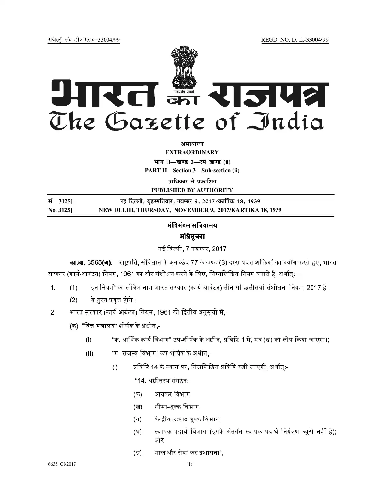
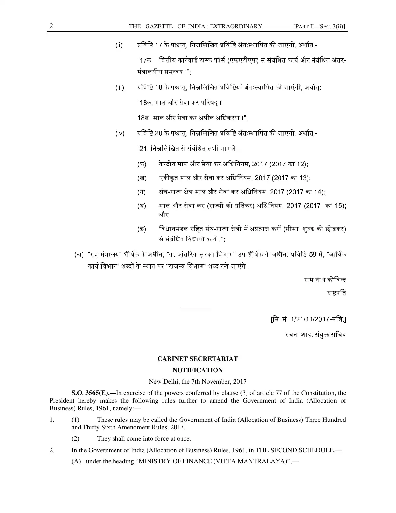
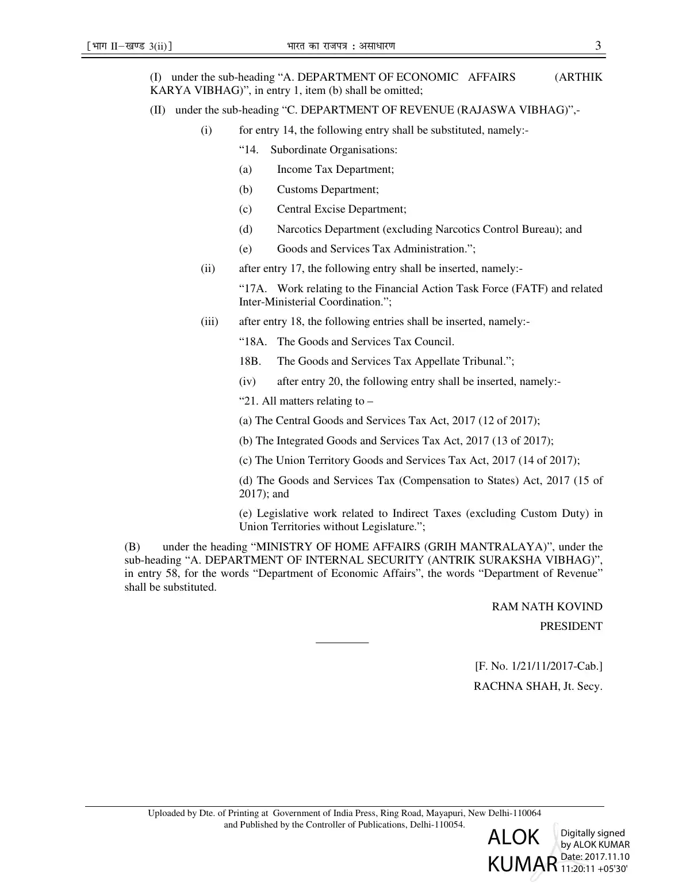

Amendment #336 (S.O. 3565 (E), 2017)
6 changes: 0 to the First Schedule, 6 to the Second Schedule. 6 applied
The order, page by page
Page 1 of 3

Page 2 of 3

Page 3 of 3

123456Schedule 2 › MINISTRY OF FINANCE › DEPARTMENT OF ECONOMIC AFFAIRS › entry 1 › item b
applied at schedule 2 › ministry MINISTRY OF FINANCE › department A › group_heading I › entry 1 › item b in the Rules after #336
Schedule 2 › MINISTRY OF FINANCE › DEPARTMENT OF REVENUE › entry 14
- 14. Subordinate Organisations:
- a. Income Tax Department
- b. Customs Department
- c. Central Excise Department
- d. Narcotics Department (excluding Narcotics Control Bureau); and
- e. Goods and Services Tax Administration.
applied at schedule 2 › ministry MINISTRY OF FINANCE › department C › entry 14 in the Rules after #336
after Schedule 2 › MINISTRY OF FINANCE › DEPARTMENT OF REVENUE › entry 17
- 17A. Work relating to the Financial Action Task Force (FATF) and related Inter-Ministerial Coordination.
applied at schedule 2 › ministry MINISTRY OF FINANCE › department C › entry 17A in the Rules after #336
after Schedule 2 › MINISTRY OF FINANCE › DEPARTMENT OF REVENUE › entry 18
- 18A. The Goods and Services Tax Council.
- 18B. The Goods and Services Tax Appellate Tribunal.
applied at schedule 2 › ministry MINISTRY OF FINANCE › department C › entry 18A in the Rules after #336
after Schedule 2 › MINISTRY OF FINANCE › DEPARTMENT OF REVENUE › entry 20
- 21. All matters relating to –
- a. The Central Goods and Services Tax Act, 2017 (12 of 2017)
- b. The Integrated Goods and Services Tax Act, 2017 (13 of 2017)
- c. The Union Territory Goods and Services Tax Act, 2017 (14 of 2017)
- d. The Goods and Services Tax (Compensation to States) Act, 2017 (15 of 2017); and
- e. Legislative work related to Indirect Taxes (excluding Custom Duty) in Union Territories without Legislature.
applied at schedule 2 › ministry MINISTRY OF FINANCE › department C › entry 21 in the Rules after #336
Schedule 2 › MINISTRY OF HOME AFFAIRS › DEPARTMENT OF INTERNAL SECURITY › entry 58
for “Department of Economic Affairs” read “Department of Revenue”
applied at schedule 2 › ministry MINISTRY OF HOME AFFAIRS › department A › group_heading IV › entry 58 in the Rules after #336
How this document was read
From the Government of India (Allocation of Business) Rules, 1961 and their amendments, as published by the Cabinet Secretariat (cabsec.gov.in), read by orgpedia. The readings of the older scanned gazettes have known gaps.